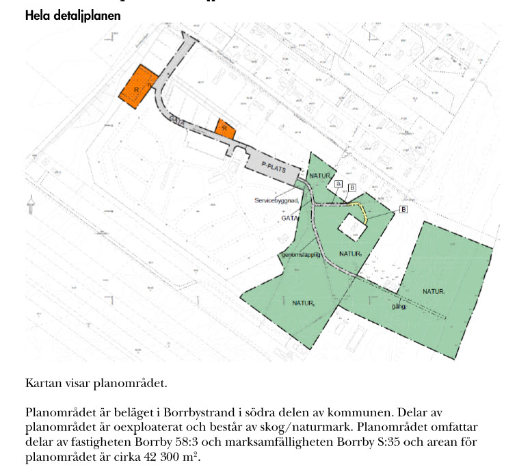
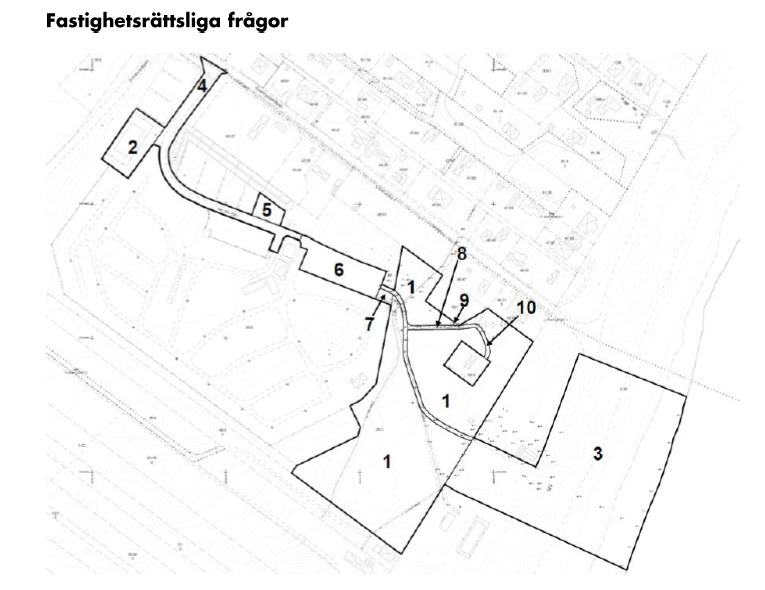

Detaljplaner & Borrby-ärendet
När kommunala planer möter lokala intressen
Sida 1 av 5
När kommunala planer möter lokala intressen


Bildkälla: Simrishamns kommun (2024) Antagandehandling
Nu är du redo! Testa dina kunskaper om detaljplaneprocessen och Borrby-ärendet! 🏗️
Filstruktur: Detta quiz är byggt med separation of concerns-principen, där HTML, CSS och JavaScript är uppdelade i separata filer:
Att dela upp kod i separata filer ger flera fördelar:
Skapad: 2025-12-31
Baserad på: Blogginlägg om detaljplaneprocessen och Borrby-ärendet, Plan- och bygglagen (2010:900), samt Simrishamns kommuns detaljplanehandlingar.
Fokus: Förståelse för detaljplaneprocessen och hur olika intressen vägs mot varandra.
Quiz: Detaljplaner och Borrby-ärendet
Frågor och fördjupade förklaringar baserade på (i Harvard-format):
Detta quiz är skapat för att öka förståelsen för detaljplaneprocessen i Sverige och hur olika intressen vägs mot varandra.
🏗️ Fokus: Det kommunala planmonopolet, granskningsprocessen, intressekonflikter och kulturarv i planprocessen.
Läs det fullständiga blogginlägget: "När kommunala planer möter lokala intressen".
Boverkets PBL-kunskapsbank: www.boverket.se
Plan- och bygglagen: riksdagen.se
Läs mer på bloggen: Controller utan gränser
För den som vill fördjupa sig i hur AI kan användas för att systematiskt kategorisera och analysera granskningsyttranden i detaljplaneprocessen rekommenderas:
AI-stödd analys av granskningsyttranden – Borrby-projektet: lundgren9.github.io/Borrby
Projektet visar hur generativ AI kan användas för att strukturera och kategorisera synpunkter enligt både lokala och nationella kategoriseringsstandards. Ett konkret exempel på AI-tillämpning i kommunal planprocess.